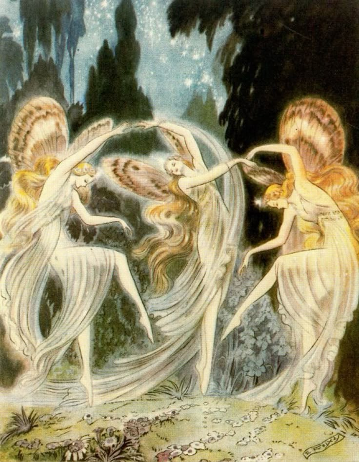

Fairies are mythical beings of folklore and romance usually having magic powers and dwelling on earth in close relationship with humans. They are usually conceived as being characteristically beautiful or handsome and as having lives corresponding to those of human beings, though longer.
The term 'fairy' goes back only to the Middle Ages in Europe, but analogues to these beings in varying forms appear in both written and oral literature, from the Sanskrit gandharva (semidivine celestial musicians) to the nymphs of Greek mythology and Homer, the jinni of Arabic mythology, and similar folk characters of the Samoans, of the Arctic peoples, and of other indigenous Americans. Fairy lore is particularly prevalent in Ireland, Cornwall, Wales, and Scotland.
